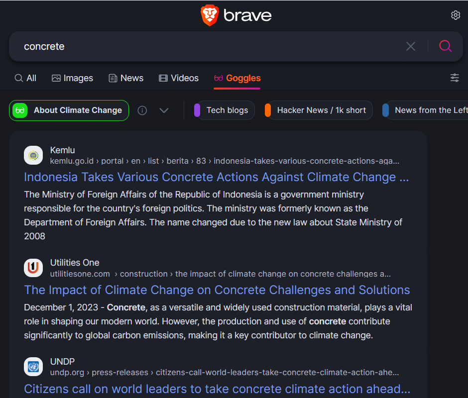
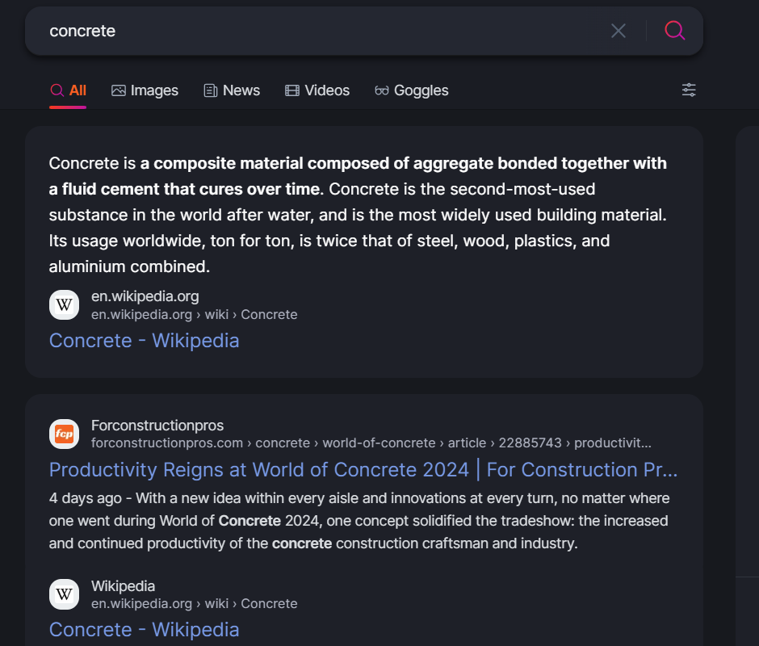

İklimsel Farkındalık
Bu website, iklim değişikliği konusunda farkındalık yaratmayı, bilinçlendirmeyi ve eğitim sağlamayı, sürdürülebilir yaşam tarzlarına yönlendirmeyi, topluluk oluşturmayı ve iklim değişikliğiyle mücadelede destek seçenekleri hakkında bilgi sunmayı amaçlamaktadır. Ama bunu farklı bir yolla gerçekleştirmeyi amaçlıyoruz. Biz size bilgileri doğrudan aktarmak yerine göz atabileceğiniz kaynak tavsiyeleri veriyoruz.
Youtube
Kanal Tavsiyeleri

Kurzgesagt

Vox

Sci Schow

Hot Mess

MinuteEarth

TED-Ed

DW Planet A

UN Climate Change

NASA Climate Change
Video Örnekleri
Arama Motorları ve Kütüphaneler
İklim değişikliği hakkında daha profesyonel ve akademik bilgiye ulaşabilmek için:
- Microsoft Academic
- Semantic Scholar
- BASE
- DOAJ
- Science.gov
- JSTOR
- EBSCOhost
- ProQuest
- Gale
- Brave Google: About Climate Change
gibi pek çok arama motorları ve kütüphaneler kullanabilirsiniz. Biz örnek olarak isimleri "Google Scholar" ve "Our World In Data" olmak üzere iki tane websiteye göz atacağız.
Our World In Data
Bu website; çeşitli küresel konularda, halk sağlığı, iklim değişikliği, ekonomik gelişme gibi konuları içeren geniş bir veri ve araştırma sunan bir çevrimiçi yayın ve veri görselleştirme platformudur. Kapsamlı ve etkileşimli veri görselleştirmeleri ve makaleleriyle tanınır. Websitesi, dünya durumunu ve karşılaştığı zorlukları daha iyi anlamalarına yardımcı olmak amacıyla bireylere, politika yapıcılara ve araştırmacılara veri odaklı araştırma ve bilgi sunmayı hedefler.
Önek Aramalar:
Google Scholar
Google scholar sayesinda daha akademik çalışmalara göz atabilirsiniz. Örnek aramalarda iklim değişikliği ile ilgili sonuçlar gösterecektir.
Örnek Aramalar:
Brave Google: About Climate Change
İklim değişikliği hakkında arama yapma kailiyetinizi azami düzeye çıkarmak için Brave arama motoruna yeni bir gözlük ürettik. Bu gözlüğü kullanabilmek için öncelikle bu gözlüğün sitesini ziyaret edebilirsiniz. Biz örnek olarak "concrete" yani çimento kelimesini aramaya karar verdik.
Aşağıda Brave arama motorunun sonuçlarının normal hali ile About Climate Change gözlüğünün kullanılarak elde edilen sonuçları karşılaştırılmıştır:
 Bu gözlük MIT Lisansı altında paylaşılmıştır. Yani gözlüğün kodlarına kolaylıkla ulaşabilir ve kodlarını çok küçük kısıtlamalarla kullanabilirsiniz.
Diğer Örnek Aramalar:
Araştırma Yapılırken Dikkat Edilmesi Gerekenler
Araştırma yapılırken dikkat edilmesi gereken birkaç önemli nokta bulunmaktadır. İlk olarak, doğru ve güvenilir kaynaklardan bilgi edinmek önemlidir. İnternet üzerindeki kaynakların güvenilirliğini kontrol etmek ve akademik yayınlar gibi resmi kaynaklardan bilgi almak, araştırmanın kalitesini artırabilir.
Ayrıca, araştırma sorusunu net bir şekilde tanımlamak ve hedefleri belirlemek de önemlidir. Araştırmanın kapsamını belirleyerek odaklanmak, veri toplama ve analiz süreçlerini daha etkili hale getirebilir. Araştırma sürecinde sistematik bir yaklaşım benimsemek, verilerin düzenli ve anlamlı bir şekilde toplanmasına yardımcı olabilir.
Veri toplama aşamasında doğru ve güvenilir veri kaynakları kullanmak da kritiktir. Verilerin güvenilirliğini kontrol etmek ve mümkünse farklı kaynaklardan doğrulamak, araştırmanın güvenilirliğini artırabilir.
Bu temel prensiplere dikkat ederek, yapılan araştırmanın kalitesini artırabilir ve elde edilen sonuçların daha güvenilir olmasını sağlayabilirsiniz.
Bunları aşağı yukarı hepimiz biliyoruz. Ancak benim özellikle unutmamanızı istediğim iki bilgi var:
Başlangıç Noktası
Belki de iklim değişikliği hakkında araştırma yapmak istiyorsunuz ama nasıl başlayacağınızı bilmiyorsunuz. Belki de aklınıza bir soru takılmıyordur. Eğer durum öyleyse burası tam sizin için. Aşağıda sizin merakınızı tetikleyebilecek sorular bıraktık. Size tavsiye ettiğimiz kaynakları, araçları ve yöntemleri kullanarak -ya da istediğinizi yaparak- bu sorulara cevaplar arayabilirsiniz. Sonuçlar sizi şaşırtabilir. İyi araştırmalar 😉.
- Et tüketiminin iklim değişikliğine etkileri nelerdir?
- Siyasetçilerin iklim değişikliğindeki rolleri ne kadar büyük?
- Avrupa ve ABD iklim değişikliğini durdurmak için etkili yöntemler kullanıyorlar mı?
- Nükleer enerjinin iklim değişikliğindeki rolu nedir?
- Plastik kullanımı iklim değişikliğini yavaşlatabilir mi?
- Yosun çiftlikleri iklim değişikliğine çözüm olabilir mi?
- İklim değişikliği gelişen devletlerin mi yoksa gelişmiş devletlerin mi suçu?
- Jeomühendislik iklim değişikliğne bir çözüm olabilir mi?
- Hangi organizasyonlar iklim değişikliğini durdurmak için çaba gösteriyor?
- Ağaç dikme kampanyalarının sıkça yaptıkları hatalar nelerdir?